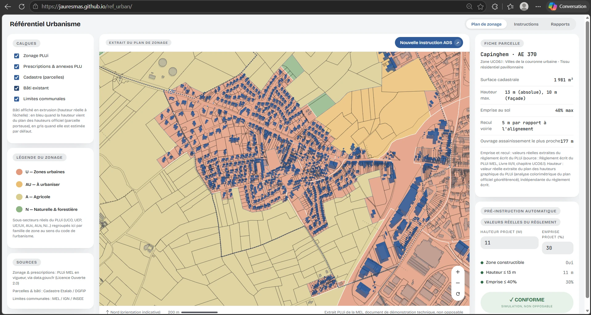

Webmapping & urbanisme réglementaire · Projet personnel, 2026
Référentiel Urbanisme
Un visualiseur PLUi interactif qui croise zonage, cadastre et hauteur du bâti pour préqualifier un projet avant instruction
Contexte et objectif
Consulter un règlement de PLUi pour vérifier la constructibilité d'un projet suppose aujourd'hui de croiser plusieurs documents distincts : le plan de zonage, le règlement écrit propre à chaque zone, le plan des hauteurs, et le parcellaire cadastral. Ce travail, généralement mené à la main à partir de PDF, ralentit la préqualification d'un projet aussi bien pour un porteur de projet que pour un service instructeur. Au-delà de l'outil produit, ce projet a aussi été l'occasion de développer mes compétences sur un terrain que mes projets précédents n'abordaient pas encore : construire moi-même un moteur de rendu géospatial, sans dépendre d'une bibliothèque cartographique existante, et apprendre à transformer des documents réglementaires bruts en logique métier exploitable. Référentiel Urbanisme réunit ces sources dans une interface unique : sélectionner une parcelle affiche directement ses règles réelles, et un module de pré-instruction compare en direct un projet hypothétique à ces règles.
Données
L'application s'appuie uniquement sur des données ouvertes officielles, portant sur plusieurs communes de la Métropole Européenne de Lille (MEL) : le zonage et les prescriptions du PLUi en vigueur (data.gouv.fr, Licence Ouverte 2.0), le parcellaire et le bâti (Cadastre Etalab / DGFiP), et les limites communales (MEL / IGN / INSEE). Les sous-secteurs réels du PLUi (UCO, UEP, UE/UX, AUc, AUs, NJ...) sont regroupés par grande famille réglementaire (U, AU, A, N) pour la lecture cartographique, tout en conservant le sous-secteur précis dans la fiche de chaque parcelle.
Démarche technique
Le rendu cartographique (zonage, parcellaire, extrusion du bâti, pan/zoom, sélection de parcelle par point-in-polygon) est entièrement développé en JavaScript, sans bibliothèque cartographique : la carte est un document SVG généré et manipulé directement en DOM. Le bâti est affiché en extrusion à l'échelle de sa hauteur réelle : en bleu lorsque cette hauteur provient du plan des hauteurs officiel du PLUi, obtenue par analyse colorimétrique de ce document raster géoréférencé, et en gris lorsqu'elle est estimée par défaut faute de donnée porteuse sur la parcelle. Cette distinction visuelle donne une indication immédiate de la fiabilité de l'information affichée.
Pré-instruction automatique
Chaque parcelle sélectionnée affiche sa fiche réglementaire réelle : surface cadastrale, hauteur maximale, emprise au sol autorisée, recul par rapport à la voirie, distance à l'ouvrage d'assainissement le plus proche. Un module de simulation permet ensuite de saisir la hauteur et l'emprise au sol d'un projet hypothétique et de les confronter directement à ces règles. Sur une parcelle de la zone UCO6.1 à Capinghem (1 981 m², hauteur maximale 13 m absolue soit 10 m en façade, emprise au sol maximale 40 %), un projet de 11 m pour 30 % d'emprise est ainsi validé conforme ; sur une parcelle agricole, le même module bloque correctement toute simulation en indiquant la zone non constructible. Le résultat est systématiquement présenté comme une simulation non opposable, et non comme une décision d'instruction.
Résultats et portée
Cette maquette démontre la faisabilité d'un outil de préqualification réglementaire construit uniquement à partir de données ouvertes et de développement web natif, sans dépendance à un SDK cartographique. Deux modules complémentaires (historique des instructions, rapports) figurent déjà dans l'interface comme prochaine étape de développement. Ce projet m'a permis de monter en compétence sur le développement JavaScript bas niveau (rendu SVG, géométrie, interaction) et sur la lecture de documents réglementaires officiels, deux domaines que je voulais renforcer au-delà de mes outils SIG habituels (QGIS, FME, PostGIS).
